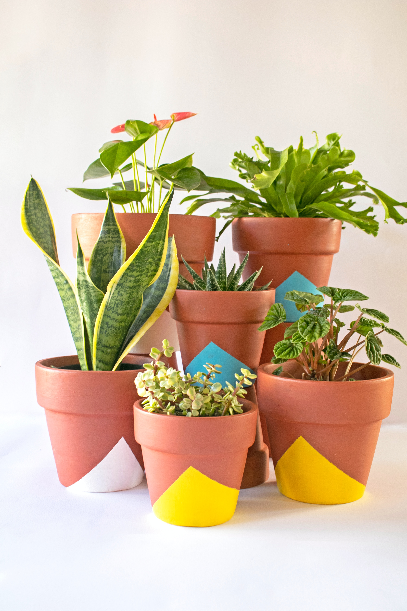

Houseplant Guide
Keep your houseplants happy and healthy! From knowing how often to water to providing the correct amount of light, here are tips to ensure that your indoor plants not only stay alive, but thrive. Before you buy a houseplant, make sure your house can provide the amount of light that plant needs. For example, if you buy a cacti, you will need a window that provides bright light (or a supplemental light). When you first bring a plant home, it is normal for the plant to drop a few leaves as it gets used to its new space. If the lighting is to its liking, it will soon adjust. When you first bring a plant home, it is normal for the plant to drop a few leaves as it gets used to its new space. If the lighting is to its liking, it will soon adjust. On the other hand, if the edges of a plants leaves scorch, or the leaves bleach out or appear dull, then the light may be too bright.
Believe it or not, more houseplants die from overwatering than from anything else! Most houseplants can not tolerate soil that is always wet. Some succulent plants (such as cacti or jade) can survive a month or two without watering. Learn the preferences of your plants. The first step, of course, is to ensure the bottom of your pot has drainage holes. Otherwise, you will need to repot the plant into a pot that does provide sufficient drainage. If a plant sits in wet soil for too long, it can develop root rot and die!